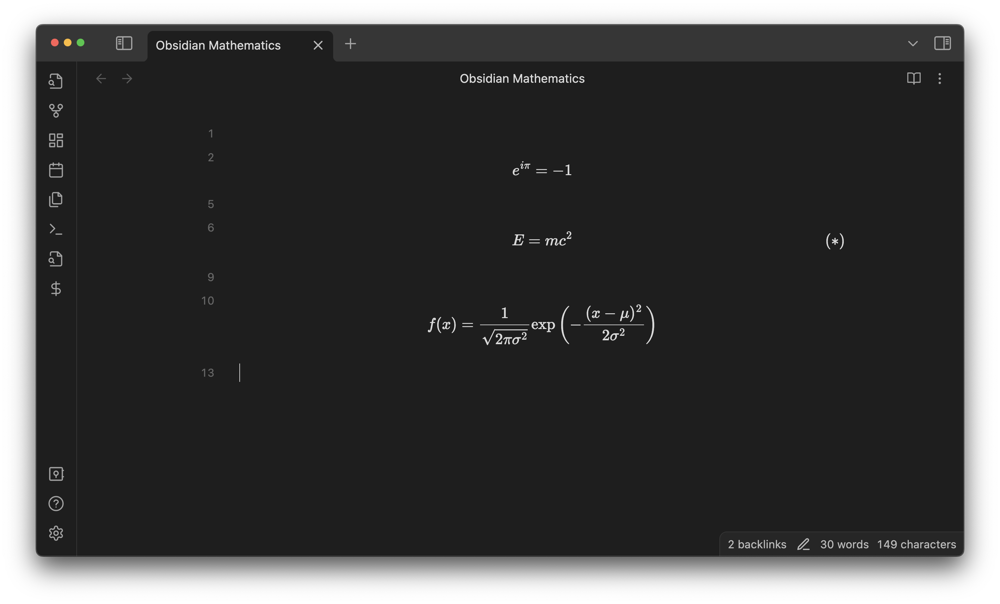
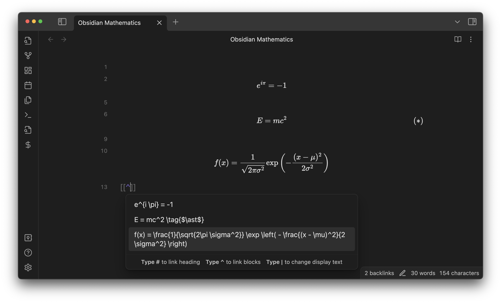
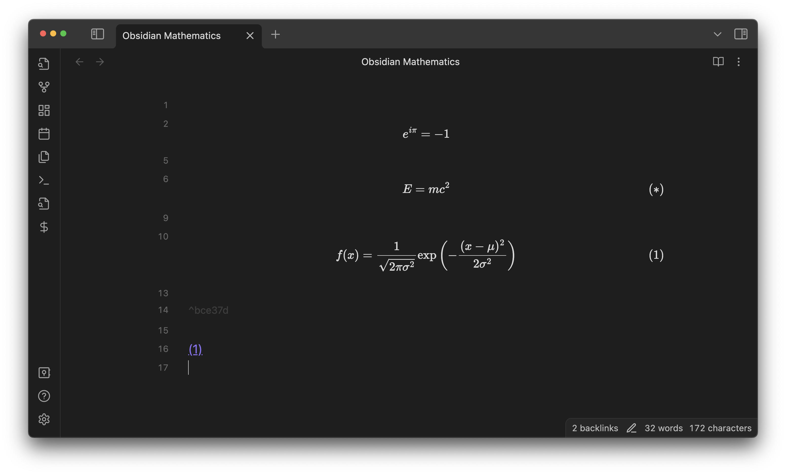
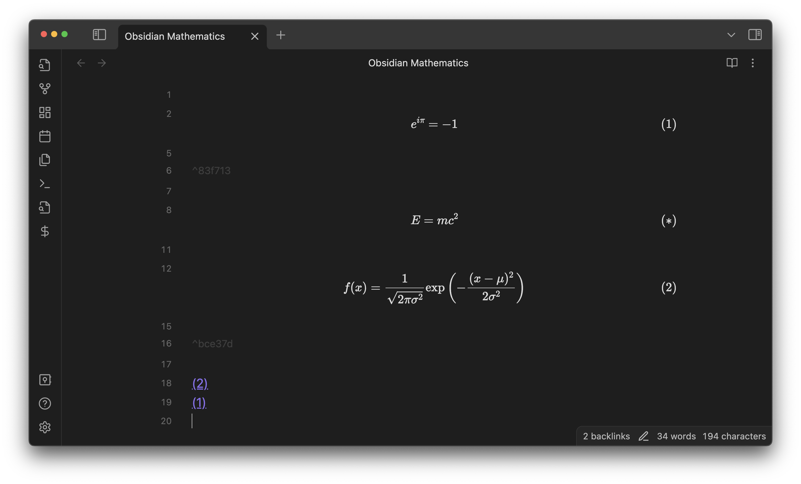
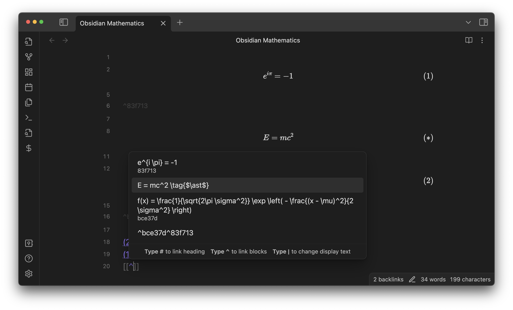
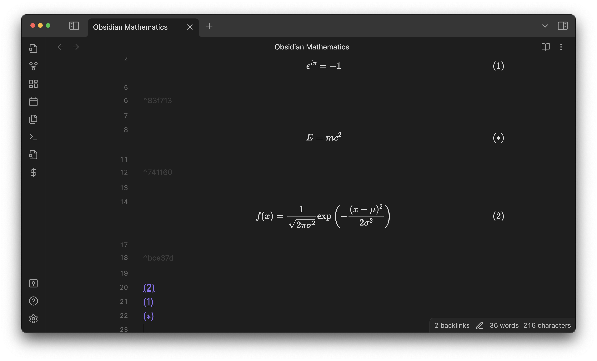
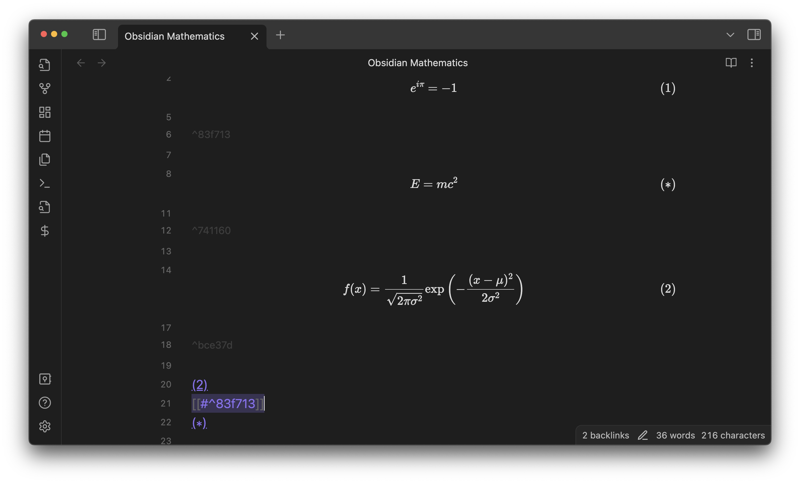
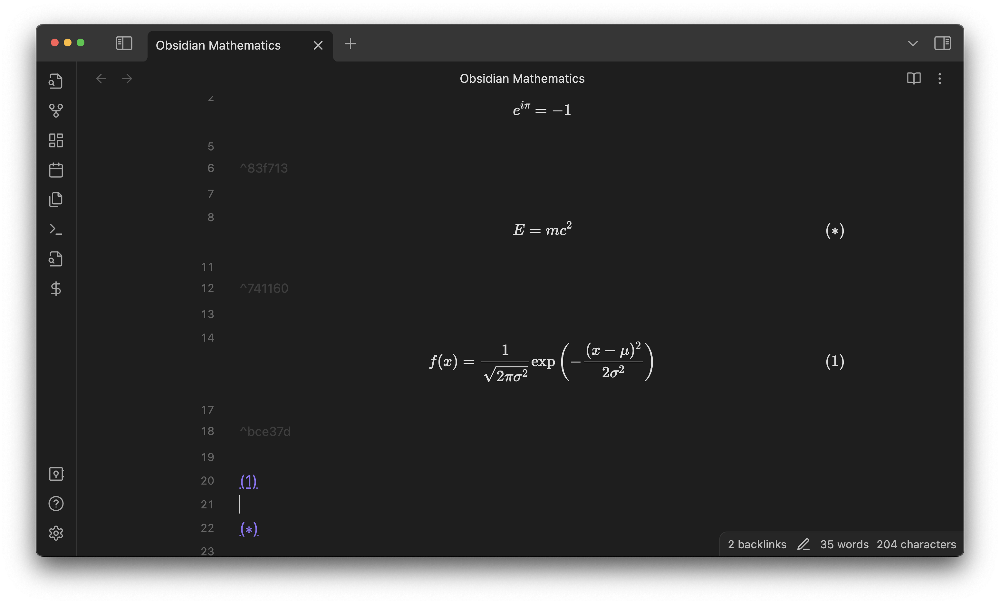

Equation numbering
When you insert a link to a math equation block ([[#^block-ID]] or [[note-title#^block-ID]]), this plugin automatically detects it and assigns an equation number to the equation.
For example, suppose you have the following note:
$$
e^{i \pi} = -1
$$
$$
E = mc^2 \tag{$\ast$}
$$
$$
f(x) = \frac{1}{\sqrt{2\pi \sigma^2}} \exp \left( - \frac{(x - \mu)^2}{2 \sigma^2} \right)
$$
Live preview:

Let’s insert a link to the last equation.

Then, the equation will be numbered and the link will be displayed with the number assigned to that equation. (This could take a few seconds because this plugin has to wait until Dataview finishes updating the metadata cache.)

Next, let’s insert a link to the equation at the top:

… which reassigns the equation numbers!

As an exception, if your equation has \tag{...} already, it will be retained as is.

Result:

Also, if you delete all the links to an equation, …

… the corresponding equation number will be removed.

You must include at least one line break between $$ ... $$ if you want the equation to be numbered.
Otherwise, Obsidian will not recognize it as a math block.
In other words:
Good
$$
f(x)
$$
Good
$$f(x)
$$
Good
$$
f(x)$$
Bad
$$f(x)$$
Also, note that you cannot insert a link to equations in callouts or blockquotes. This is an inherent limitation of Obsidian rather than this plugin.1
The align Environment
You can choose whether multi-line equations in an align environment are numbered collectively as a group:

or individually.

Go to the Number line by line in align section in the plugin preferences to change the current setting.
When Number line by line in align is turned on, you can exclude a line from numbering by inserting \nonumber, just like in LaTeX.

-
Technically, it is possible to display an equation number for an equation in callouts. However, I think there is no point in doing it if the equation cannot be referenced. ↩